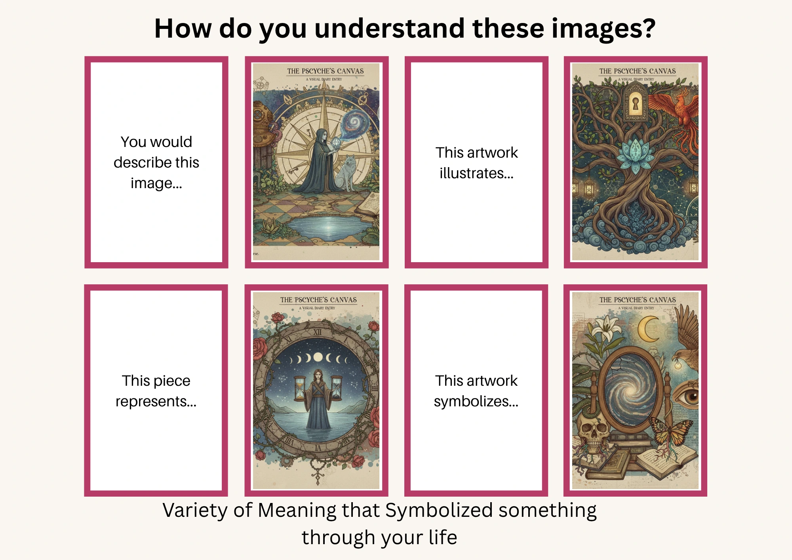
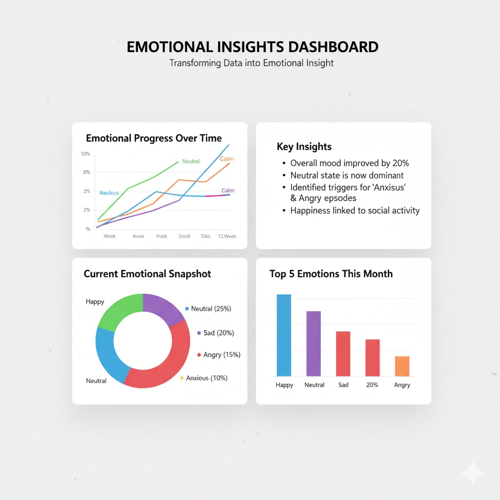
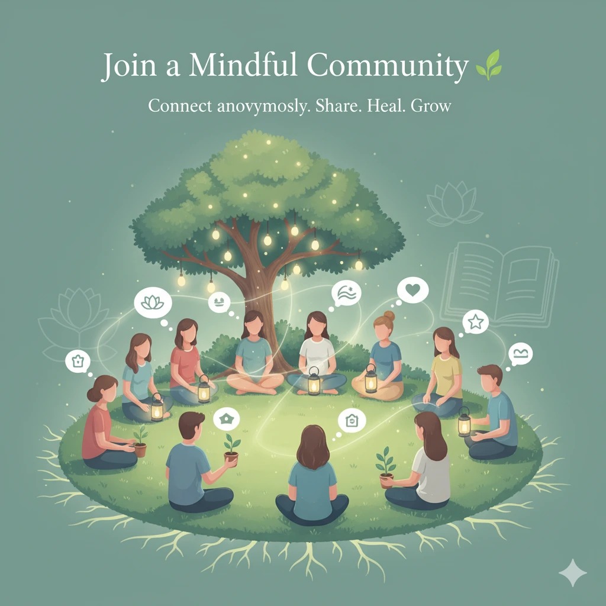

This website is designed to give people accessibility to survey, gallery, and many more that
grasp their thoughts, feelings, and worries.
"The greatest discovery of my generation is that a human being can
alter his life by altering his attitudes."
- William James
A mixture of Google Forms (for surveys) +
Calm App aesthetics (soft, calming visuals) +
basic analytics (showing people their survey reflections).
The goal is to create a simple, accessible psychology-inspired survey site
where people can express worries, emotions, and thoughts, then receive
reflective insights in a clean, easy-to-use format.
“Your present circumstances don’t determine where you can go; they merely determine where you start.”
- Nido Qubein
About Us
Psyche Analyst is a simple, psychology-inspired site where people can share worries, emotions, and thoughts,
then receive reflective insights in a calming, easy-to-use format.
This project is for psychology enthusiasts who want to better understand mental and emotional well-being.
Our mission is to create a supportive platform where users can express themselves freely and gain valuable insights
into their psychological state.
This website is envisioned as a bridge between psychology and digital interaction.
It is not a medical tool, but a safe space where people can reflect, share, and grow.
Our hope is that psychologists, researchers, and even students will find value in this platform as a way
to explore human thoughts, emotions, and worries.
✨ Vision & Mission
Our Vision
To build a digital sanctuary where the mind, art, and soul unite — transforming self-reflection into a journey of healing, creativity, and understanding. We envision a world where mental wellness and self-discovery are not luxuries, but essentials accessible to everyone.
Make mental wellness accessible through simple, intuitive digital tools that nurture emotional awareness and resilience.
Encourage self-reflection and personal growth by guiding users to explore their inner world with compassion and curiosity.
Create a safe, anonymous, and inclusive space where individuals can express, learn, and connect through shared experiences.
Empower expression through art and symbolism, allowing users to upload drawings, paintings, or visual reflections that reveal the psyche’s voice.
Build a collective gallery that celebrates the diversity of human emotion, thought, and imagination — a digital mirror of the global mind.
Facilitate surveys and reflective assessments that promote deeper understanding of one’s personality, behavior, and emotional balance.
Foster community inspiration through curated reflections, archetypal insights, and guided self-analysis.
Integrate psychology, technology, and art into a unified experience that speaks to both the rational and emotional self
🎯 Goals
This is not a medical tool, but it serves as a safe space where users can:
Share their feelings anonymously
Reflect on their own psyche
See collective patterns (how others feel too)
Engage with psychology in an approachable, friendly format
👨💻 Creator
This project was designed and developed by Carl James M. Ayag.
As the author, I am passionate about blending technology and psychology to help others explore their inner world.
Ready to reflect on your emotions?
Benefits
Use Psyche Analyst to…
Discover Your Emotional Patterns 🧠
Understand what you truly feel — beyond surface emotions. Our guided surveys help you uncover hidden moods and patterns through self-reflective questioning.

Express Through Art and Symbolism 🎨
Share drawings or symbolic art that represent your psyche. Let your creativity speak where words fall short, and see your emotions take visual form.
Explore the Collective Gallery 🌌
Browse a digital collection of artworks and reflections submitted by others. Experience how diverse minds visualize emotion, thought, and transformation.

Turn Data Into Emotional Insight 📊
View your survey results transformed into clear visuals and insights. Track emotional progress and see how your self-awareness grows over time.

Join a Mindful Community 🌱
Connect anonymously with others through shared reflections and stories. Discover that healing and growth begin with empathy and connection.
“Every emotion is a message — art, reflection, and data are simply ways to listen.”


 — Psyche Analyst Community
— Psyche Analyst Community